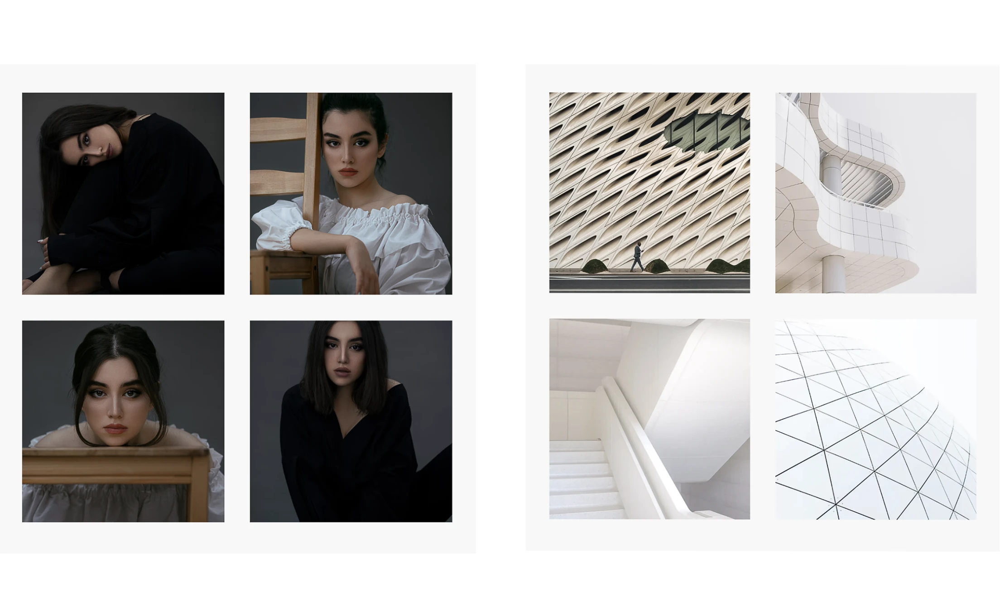

Toolbars
Image grids

Image and double text
Side-by-side reversable
Reusable sections
Fully responsive design
Call-to-action
Footers
components may be adapted with custom colors, features, images, fonts and more